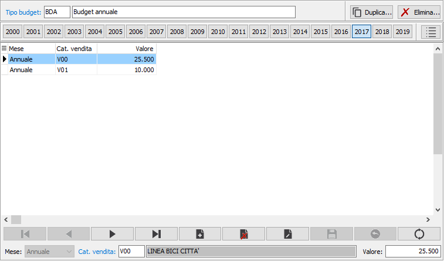
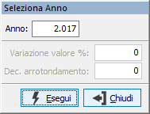
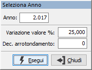

Gestione valori budget
Il programma consente l’inserimento manuale dei valori del budget di ciascun agente; ogni elemento del budget può essere gestito indicando un valore annuo oppure specifici valori mensili in base alla tipologia di Budget utilizzata.
Accedendo al programma, appare la seguente finestra video; viene generata in automatico la barra degli anni per accedere in modo semplice ai valori degli ultimi venti anni; cliccando su di uno dei bottoni si limita la visualizzazione ai soli valori di quell'anno; per ogni tipo budget inserito è possibile caricare i valori dei singoli anni.

Nella parte superiore è indicato il tipo di budget, in base al quale saranno impostati i campi di raggruppamento da poter inserire nella parte sottostante per il periodo (mese o anno); se il budget è definito annuale non sarà possibile inserire il mese; per ogni periodo è necessario compilare almeno il primo dei campi di raggruppamento ed il relativo valore.

 Tramite
il pulsante è possibile ricercare un anno specifico. Tramite la finestra
di ricerca, è possibile indicare un anno e premendo Esegui si viene posizionati
direttamente sui valori dell'anno scelto.
Tramite
il pulsante è possibile ricercare un anno specifico. Tramite la finestra
di ricerca, è possibile indicare un anno e premendo Esegui si viene posizionati
direttamente sui valori dell'anno scelto.
Tramite il pulsante è possibile eliminare tutti i dati relativi ad un anno specifico. Tramite la finestra di ricerca, è possibile indicare un anno e premendo Esegui vengono eliminati direttamente i dati dell'anno selezionato.

Tramite il pulsante è possibile duplicare tutti i dati relativi all'anno su cui si è posizionati. Tramite la finestra di ricerca, è possibile indicare l'anno da generare, una percentuale di variazione che sarà applicata ai valori dell'anno corrente per generare quelli del nuovo anno ed i decimali per l'arrotondamento dei valori stessi. Premendo Esegui vengono generati i valori dell'anno selezionato.